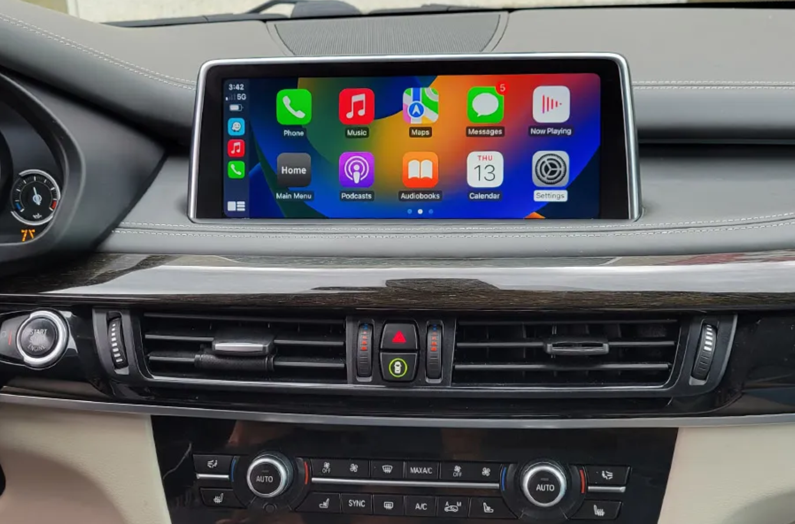

01
Connect wirelessly.
Apple CarPlay and Android Auto put supported phone apps on your BMW’s display. Maps, playlists and calls, all within reach.
YOUR PHONE, IN YOUR DRIVE
BMW CONNECTIVITY RETROFITS
Wireless CarPlay + Android Auto.
Your factory screen. Your original interior.
Bring your maps, music and calls into the drive. Mobile installation available—we come to you, with a typical installation taking about 2 hours.

THE UPGRADE
Designed around your factory interior, with the everyday features you reach for most.
Apple CarPlay and Android Auto put supported phone apps on your BMW’s display. Maps, playlists and calls, all within reach.
Retain your original screen and factory iDrive controls. An upgrade that works with the interior you already enjoy.
Mobile installation brings the upgrade to you. Send your location with your BMW details to confirm availability and arrange a convenient installation.
START WITH YOUR BMW
Choose your model and year. Get an initial result, then confirm your setup with a dashboard photo.
“Compatible*” means retrofit options are documented for the model range, not that your individual car has been approved. “Needs a manual check” means we need more information—not that an upgrade is impossible.
This guide is not verified for one particular MMI box. Build month, market, screen, audio connections and previous modifications can change the answer. We confirm your factory system and the right kit before quoting. Research checked September 7, 2026.
You can also text your year, model and dashboard photo for a personal compatibility check.
REAL BMWs. REAL INSTALLATIONS.
Two real vehicle demos, filmed on a phone. Tap play to see CarPlay in action. Compatibility is checked for your individual BMW.
E70 / 2013
CarPlay navigation and phone interaction on the X5’s dashboard display.
F34 / 2015
A close-up of the CarPlay interface in the 328i GT’s original interior.
LET’S CHECK YOUR BMW
Compatibility depends on your BMW’s existing system. Send a few details so we can confirm the right installation.
Include a clear dashboard photo and your location for mobile installation.
We’ll confirm whether your setup is supported and quote your installation.
Arrange your mobile installation. Allow about 2 hours; we’ll confirm the timing for your BMW.
Installation is available for compatible BMW vehicles. The year, model and existing infotainment system matter, so send those details and a dashboard photo for confirmation.
This service is designed to retain your original BMW screen and iDrive controls. We’ll confirm compatibility with your current system before booking.
The upgrade provides wireless Apple CarPlay and Android Auto for compatible phones and vehicles. Let us know which phone you use when you enquire.
Yes, the retrofit retains access to your BMW menus. The way you switch between the systems depends on your setup and will be confirmed for your vehicle.
Installation starts from $350. Your final quote depends on compatibility and the installation required. We’ll confirm the quote before booking.
Yes—mobile installation is available, so we come to you. Send your location with your BMW’s year, model and a dashboard photo to confirm availability.
A typical installation takes about 2 hours. We’ll confirm the timing for your vehicle when arranging the appointment.
MOBILE INSTALLATION AVAILABLE
Send your BMW’s year, model, a dashboard photo and your location. We come to you.
No vehicle details are submitted through this website. Your enquiry opens in your messaging or phone app.